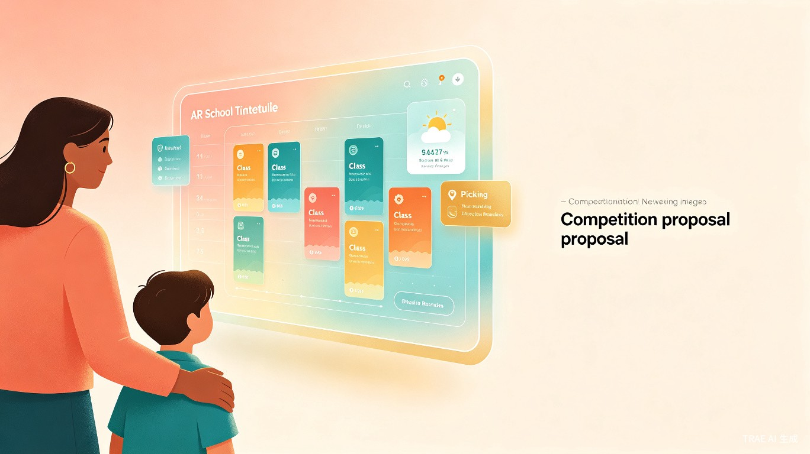
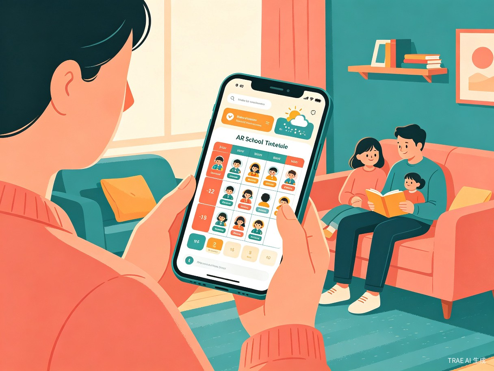
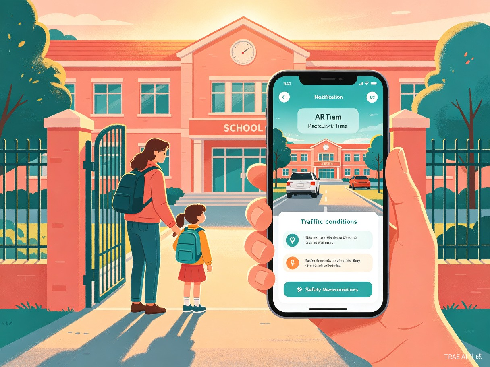
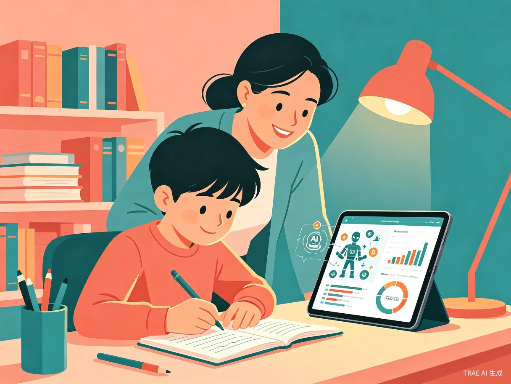

项目概述
AR AI 课表是一款面向 K12 学生家长的一站式 AI 家校共育小程序，以增强现实（AR）课表为核心载体，整合课表管理、家校联动、学习辅助、健康安全、便民服务五大功能模块，致力于解决家长在接送孩子、辅导作业、关注健康、管理设备等方面的核心痛点。
我们的愿景是：让每一位家长都能通过一部手机，轻松掌控孩子的校园生活全貌，实现从"被动应对"到"主动规划"的教育方式升级。
以 AR 课表为入口，以 AI 为引擎，以家校共育为目标，打造一个让家长省心、孩子开心、老师放心的智能校园生活助手。
痛点分析
通过对大量 K12 学生家庭的调研，我们总结了当前家长在日常校园生活中面临的五大核心痛点：
课表混乱
纸质课表易丢失，班级临时调课家长无法及时知晓，导致带错课本、错过重要课程。
信息孤岛
作业通知散落在多个微信群，家长需逐条翻阅，容易遗漏关键信息，多孩家庭更是手忙脚乱。
学习盲区
家长不了解孩子的薄弱知识点，盲目报班浪费金钱，缺乏科学的学习规划依据。
安全隐患
接送时段交通复杂，孩子独自出行缺乏安全提醒，电子产品使用缺乏有效管控。
产品定位
AR AI 课表 — 打开手机扫一扫，孩子的校园生活一目了然。
- 目标用户：K12 阶段（小学至高中）学生家长，尤其关注双职工家庭和多孩家庭
- 产品形态：微信小程序（轻量化、易传播、免安装）
- 核心载体：AR 增强现实课表 — 手机摄像头扫描课表即可呈现当日课程的立体信息
- 技术内核：AI 智能分析 + 自然语言处理 + AR 渲染 + IoT 设备联动
功能架构
AR AI 课表围绕家长日常校园生活场景，规划了五大核心功能模块，形成从"知情"到"行动"的完整闭环。
flowchart TB
A[AR AI 课表] --> B[基础课表管理]
A --> C[家校联动服务]
A --> D[学习辅助工具]
A --> E[健康安全管理]
A --> F[便民便捷服务]
B --> B1[一键录入班级课表]
B --> B2[AR 显示当日课程]
B --> B3[教材配套 AI 动画]
B --> B4[儿童手表定位联动]
C --> C1[微信群消息智能提取]
C --> C2[作业/通知自动整理]
C --> C3[多设备同步提醒]
C --> C4[开学/学期前置提醒]
D --> D1[成绩扫描 AI 分析]
D --> D2[薄弱知识点推荐]
D --> D3[学习资源智能匹配]
D --> D4[文具教辅采购推荐]
E --> E1[生长发育追踪]
E --> E2[运动达标指引]
E --> E3[生理期贴心提醒]
E --> E4[心理健康提示]
E --> E5[交通安全提醒]
E --> E6[电子设备管控]
F --> F1[文具采购电商链接]
F --> F2[校园缴费快捷入口]
F --> F3[保险购买入口]
模块详解
模块一：基础课表管理
课表是整个产品的核心入口。我们通过 AR 技术让静态课表"活"起来，让家长一眼掌握孩子当天的全部课程信息。
- 一键录入班级课表：家长拍照或手动输入班级周课表，AI 自动识别课程名称、时间、教室，生成数字化课表。支持多孩家庭管理多个课表。
- AR 显示当日课程：打开手机摄像头扫描课表区域，AR 技术在课表上叠加当日课程高亮、课本提醒、上课时间倒计时等立体信息，直观清晰。
- 教材配套 AI 学习动画：根据当日课程自动推送与教材章节配套的 AI 学习动画和知识卡片，帮助孩子预习和复习。
- 儿童定位手表联动：对接主流儿童定位手表（如小天才、360），实时显示孩子位置，结合课表时间智能判断孩子是否已到校/离校。
早上 7:15，妈妈打开 AR AI 课表，扫描冰箱上的课表贴纸。AR 界面显示今天第一节是数学课，需要带三角板和圆规。系统同时推送了一条数学预习动画，孩子边吃早餐边看，提前进入学习状态。
模块二：家校联动服务
解决家长"信息焦虑"问题，将散落在各处的校园信息自动聚合、智能整理、及时提醒。
- 微信群消息智能提取：授权绑定班级微信群后，AI 自动识别并提取作业通知、重要公告、活动通知等关键信息，无需家长逐条翻阅。
- 作业/通知自动整理：提取的信息自动按科目分类整理，支持作业链接提取与文字内容结构化展示，一目了然。
- 多设备同步提醒：支持爸爸、妈妈、爷爷奶奶等多位家长设备同步接收提醒，确保重要信息不遗漏。
- 开学/学期前置提醒：新学期开学前，系统自动推送文具采购清单、证件照拍摄提醒、体检安排、入学手续办理等前置事项，帮助家长提前准备。
下午 4:30，班级群班主任发布了语文作业和数学练习册第 23 页。AR AI 课表自动提取并整理为待办事项，分别推送到妈妈的工作手机和爸爸的私人手机上。晚上 7 点，系统再次提醒："语文作文还差 300 字未完成"。
模块三：学习辅助工具
用 AI 帮家长做"学习诊断师"，精准定位薄弱环节，推荐最适合的学习资源。
- 成绩扫描 AI 分析：拍照扫描试卷或成绩单，AI 自动录入各科成绩，生成多维度分析报告，精准定位薄弱知识点。
- 薄弱知识点推荐：基于成绩分析结果，智能推荐对应的学习平台课程（如多邻国、天才鸭等）和免费官方学习资源，精准补弱。
- 学习资源智能匹配：根据孩子年级、学科进度和薄弱环节，从海量资源中筛选最适合的学习内容，降低家长选择成本。
- 文具教辅采购推荐：按年级推荐平价优质文具和教辅材料，附电商比价链接，开学季提前提醒采购，避免临时高价购买。
期中考试后，妈妈用 AR AI 课表扫描了孩子的数学试卷。AI 分析发现孩子在"分数运算"和"几何面积"两个知识点上失分较多，自动推荐了 3 个免费练习资源和 1 个优质网课，并生成了两周专项提升计划。
模块四：健康安全管理
关注孩子的身心健康与日常安全，做家长 24 小时的"安心助手"。
- 生长发育追踪：定期记录身高、体重，自动生成生长发育曲线，对比同龄标准数据，异常时及时提醒就医。
- 运动达标指引：根据性别和年龄推荐每日运动量，结合课表体育课安排，智能规划课外运动方案。
- 生理期贴心提醒：为青春期女孩提供生理期记录与预测，提前提醒准备用品，避免尴尬。
- 心理健康提示：提供亲子沟通话术引导和心理健康小贴士，帮助家长识别孩子的情绪变化，改善亲子关系。
- 交通安全提醒：接送时段自动推送交通安全提示（如佩戴头盔、系安全带），结合实时路况推荐最佳接送路线。
- 电子设备管控：绑定主流品牌家用智能路由器（如华为、TP-Link、小米），通过小程序远程管控孩子上网时段与设备。上课和休息时段自动锁网，贴合学习作息。
周一早上 7:50，系统检测到孩子还未出门，自动推送提醒："距离上课还有 40 分钟，建议走 A 路线，当前路况畅通。别忘了戴头盔！"同时，路由器已自动切换到"上学模式"，平板和电视网络暂停，避免孩子沉迷。
模块五：便民便捷服务
整合校园生活高频需求，让家长在一个小程序内完成所有"琐事"。
- 文具采购电商链接：整合文具教辅采购需求，直达平价电商页面，支持一键比价和批量采购。
- 校园缴费快捷入口：对接学校官方缴费系统，一键完成学费、餐费、校车费等各类费用的在线缴纳。
- 保险购买入口：提供学平险等校园相关保险的便捷购买通道，保障孩子在校安全。
典型使用场景
以下三个场景展示了 AR AI 课表如何融入家长的日常生活：

场景一：早晨准备
妈妈打开 AR AI 课表，扫描课表贴纸，确认今日课程和所需物品。系统推送预习动画和天气提醒，孩子高效完成出门准备。

场景二：放学接送
下午 4 点，系统推送接孩子提醒，显示实时路况和最佳路线。结合手表定位，确认孩子已到达校门口等待区。

场景三：晚间辅导
系统自动整理今日作业，扫描试卷生成薄弱知识点分析，推荐针对性练习资源。路由器自动切换到"学习模式"。
场景四：学期规划
开学前两周，系统推送文具采购清单、体检提醒、保险续费通知，一站式完成所有准备工作，从容迎接新学期。
技术方案
AR AI 课表采用前沿技术栈，确保产品体验流畅、数据安全、功能可扩展。
| 技术领域 | 技术方案 | 应用场景 |
|---|---|---|
| AR 增强现实 | 微信小程序 AR 框架 + ARCore/ARKit | 课表 AR 扫描、立体课程信息叠加 |
| AI 自然语言处理 | 大语言模型 + OCR 文字识别 | 微信群消息提取、试卷成绩扫描分析 |
| IoT 设备联动 | 儿童手表开放 API + 智能路由器 SDK | 实时定位、网络管控 |
| 数据存储 | 云数据库 + 端侧加密存储 | 课表数据、成绩记录、健康档案 |
| 消息推送 | 微信订阅消息 + 短信通道 | 作业提醒、接送通知、安全预警 |
| AI 学习推荐 | 知识图谱 + 协同过滤算法 | 薄弱知识点定位、学习资源匹配 |
竞品对比
目前市场上尚无将 AR 课表与家校共育深度融合的产品。以下是与现有相关产品的对比：
| 功能维度 | AR AI 课表 | 普通课表 App | 家校通平台 |
|---|---|---|---|
| AR 课表展示 | ✔ 核心功能 | ✘ | ✘ |
| 微信群消息提取 | ✔ AI 自动整理 | ✘ | ✘ |
| 成绩 AI 分析 | ✔ 薄弱点定位 | ✘ | ✘ |
| 儿童手表联动 | ✔ 多品牌支持 | ✘ | ✘ |
| 电子设备管控 | ✔ 路由器联动 | ✘ | ✘ |
| 生长发育追踪 | ✔ 曲线对比 | ✘ | ✘ |
| 开学前置提醒 | ✔ 全流程覆盖 | ✘ | ✘ |
| 便民服务整合 | ✔ 一站式入口 | ✘ | ✘ |
创新亮点
AR + AI 双引擎
将增强现实与人工智能深度融合，AR 负责直观呈现，AI 负责智能分析，两者协同打造全新的家校共育体验。
微信群信息聚合
首创微信群消息智能提取功能，将散落的信息自动聚合整理，解决家长"信息焦虑"这一普遍痛点。
IoT 全场景联动
打通儿童手表、智能路由器等 IoT 设备，实现课表驱动的自动化场景联动，让技术服务于真实生活。
全周期关怀体系
从课表提醒到健康追踪，从学习分析到安全预警，覆盖孩子校园生活的全周期，做家长的"全能助手"。
发展路线
| 阶段 | 时间 | 核心目标 | 关键功能 |
|---|---|---|---|
| MVP | 第 1-3 个月 | 验证核心价值 | 数字化课表 + AR 展示 + 基础提醒 |
| V1.0 | 第 4-6 个月 | 完善家校联动 | 微信群消息提取 + 作业整理 + 多设备同步 |
| V2.0 | 第 7-9 个月 | 拓展学习与健康 | 成绩 AI 分析 + 健康追踪 + IoT 设备联动 |
| V3.0 | 第 10-12 个月 | 构建生态闭环 | 便民服务整合 + 学习资源平台 + 社区互动 |
团队介绍
我们是一支热爱教育科技的团队，成员涵盖产品设计、前端开发、AI 算法和教育研究等多个领域。我们相信，技术的力量应该让每一个家庭都能享受到更优质的教育体验。
用 AI 和 AR 技术，重新定义家校共育方式，让每一位家长都能成为孩子成长路上最智慧的伙伴。
结语
AR AI 课表不仅仅是一个工具，更是一种全新的家校共育理念。我们希望通过这个产品，让家长从繁杂的信息中解放出来，把更多的时间和精力投入到与孩子的陪伴和成长中。
我们相信，科技的温度在于让复杂变简单，让焦虑变安心。AR AI 课表，正是我们对这一信念的践行。